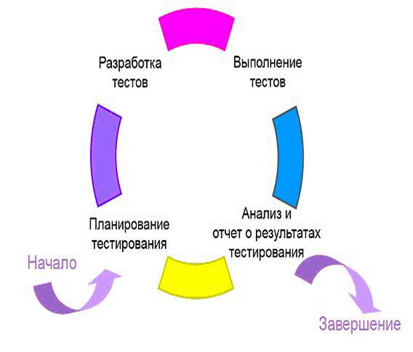

Тема 8. Циклы тестирования
Как уже было определено, обобщенная модель ЖЦ ТП приобретает итеративную природу при итеративной разработке. Помимо этого, тестирование обычно проводится циклами, каждый из которых имеет конкретный список задач и целей. Поэтому можно сделать вывод о двойной цикличности процесса тестирования, если разработка ведется по итеративной или спиральной модели ЖЦ ПО.
Можно выделить два вида циклов тестирования, назовем их условно полный цикл тестирования и частный цикл тестирования:
Опишем полный и частный циклы тестирования и определим основные задачи каждого из них.
8.1. Частный цикл тестирования и его задачи.
Краткие описания задач, входящих в частный цикл тестирования:
Частный цикл тестирования, проводимый для отдельной сборки объекта тестирования на текущем этапе ЖЦ ТП, представлен на рис. 5
Рис. 5. Частный цикл тестирования, проводимый для отдельной сборки объекта тестирования
Выполнение задач жизненного цикла сопровождается разработкой различных артефактов (документов, моделей и других материалов проекта). Как обычно в RUP, разработка артефактов может проводиться в разной форме с разными требованиями к способу выполнения, рецензированию и качеству оформления.
Прежде чем описывать полный цикл тестирования, определим основные артефакты этого процесса. Ниже представлены основные рабочие артефакты тестировщиков, в той или иной форме связанные со Сценариями использования. Эти документы, если это не оговорено особо, стоит готовить в достаточно аккуратном виде, поскольку, скорее всего, вам придется неоднократно к ним возвращаться самим, а часто еще и передавать их Заказчику или группе сопровождения и технической поддержки системы.
8.2. Основные артефакты тестирования
План тестирования. Основной документ, определяет стратегию тестирования на каждой итерации. В него входят описание целей и задач тестирования в текущей итерации, перечни тестов, которые должны и не должны использоваться, формируемые начальные и конечные метрики и критерии тестирования.
Сценарий тестирования (тест кейс или тестовый случай). Это один из основных документов, с которыми имеет дело тестировщик. По сути, упрощенное описание теста. То есть входной информации, условий и последовательности выполнения действий и ожидаемого выходного результата. Учитывая, что даже успешно прошедшие тесты в RUP выполняются неоднократно в ходе регрессионного тестирования, наличие таких описаний необходимо. Однако уровень формальных требований к их оформлению может меняться в очень широких пределах.
Тестовые данные. Призваны определять наборы (обычно формальных) входных данных для тестов, а также ожидаемые результаты, с которыми полученные результаты выполнения тестов должны сравниваться как с эталонными. Тестовые данные должны храниться в одном месте, желательно в центральном хранилище данных. Очень рекомендуется собирать вместе данные для каждой определенной группы тестов
Тестовый скрипт. Обычно говорят о программной реализации теста, хотя скрипт может описывать и ручные действия, необходимые для выполнения конкретного тест кейса.
Набор тестов. Как правило, сценарии тестирования объединяются в пакеты или наборы. Во-первых, это просто способ группирования тестов со сходными задачами, а, во-вторых, в такой набор можно включать зависимые тесты, которые должны выполняться в определенном порядке (поскольку последующие тесты используют данные, сформированные в ходе выполнения предыдущих).
Список идей тестов. Использование в RUP для анализа и проектирования Системы Сценариев использования существенно упрощает задачу разработки необходимого набора тестов. Основной объем тестов строится как проверка различных вариантов выполнения каждого сценария использования. Однако тесты не сводятся к Сценариям использования, как и задачи тестирования не сводятся только лишь к проверке функциональных требований к системе. Проверка нефункциональных требований может потребовать использования специальных приемов и подходов. Соответствующие тесты не всегда очевидны. Для таких ситуаций и создается Список идей тестов. В него все желающие могут записать Что и/или Как стоит еще проверить. Этот список является внутренним рабочим документом группы тестирования.
Результаты тестирования. Представляют собой суммарную информацию о прохождении тестов, на основе анализа которых и сравнения с ожидаемыми результатами выполняется детальная оценка качества тестируемого продукта и текущего статуса процесса тестирования. Рекомендуется записывать и сохранять результаты тестирования для каждого этапа как один из важнейших артефактов тестирования.
Дефекты. Основополагающие артефакты процесса тестирования – описывают обнаруженные факты несоответствия системы предъявляемым требованиям. Являются одним из подтипов запросов на изменение, описывающих найденную ошибку или несоответствие на всех этапах тестирования. Хотя базу данных дефектов можно вести в текстовом файле или Excel таблице, предпочтительным является использования специализированного инструментального средства, которое позволяет передавать информацию об обнаруженных дефектах от тестировщиков к разарботчикам, а в обратную сторону – сведения об устранении дефектов. А также формировать необходимые отчеты о тенденциях изменения количества обнаруживаемых и устраняемых дефектов.
8.3. Полный цикл тестирования и его задачи
Рассмотрим более подробно существующие активности/задачи связанные с тестированием:
1) планирование тестов:
2) дизайн тестов:
3) разработка тестов:
4) выполнение тестов:
5) оценка тестов:
На основе перечисленных задач и активностей можно определить полный цикл активностей тестирования, приведенный на рис. 6.

Рис. 6. Полный цикл тестирования, определяющий основные активности специалистов
Таким образом, помимо уже определенной итеративности V-модели жизненного цикла ТП, она приобретает двойную цикличность за счет того, что общие и/или частные циклы тестирования могут происходить конечное число раз в пределах итерации.